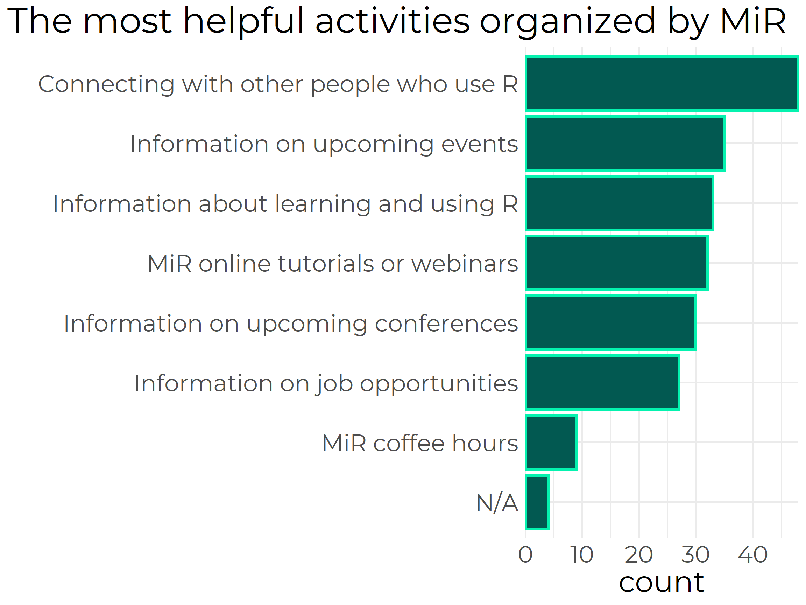

Climate Survey results
By MiR Survey Committee

The Survey
The MiR community aims to support underrepresented R users of the World. In order to understand more about this community, a climate survey was conducted during the first half of 2021. Thanks to MiR volunteers' translation, it was possible to answer to the questions in two languages: English or Spanish. From a total of around 190 community members, 74 of them responded the survey. In this post, we wrap up the results that came out from the analysis. In particular, we focus on the involvement in MiR activities, and the demographic diversity of the community.
Why people join us and how they take part?
People join MiR for many diverse reasons, with the community as the top answer among the respondents. Other reasons include to offer help to the members of the community and to get help to learn R or to find job opportunities. These reasons can be linked to the allyship condition of the members.

Respondents were asked if they identify as allies and 69% answered ‘yes’. However, contrary to as it might be perceived because of the binary nature of this question, the categories ally and minority are not necessarily disjoint. A few members self-identify as a minorities and also as allies in another possible aspect of the group diversity.
During the first year of MiR community, respondents participated in various activities. The activity selected as the most helpful was connecting with other people (which matches with the top reason to join MiR).

On the other hand, we collected information about the activities that members wish MiR would offer. Common answers among minorities include the possibility to access to mentoring and career advice. Other members also pointed out the need to be better informed and suggested more presence on social media, and newsletters to be receive news and activity invitations.
Our diversity
One of the goals of the survey was to understand more about the diversity of the community members. The first part of the diversity section was addressed to accesibility. 15% of the respondents identified themselves with any of the following statements:
- I have difficulty remembering, concentrating, or making decisions.
- I am blind or having serious difficulty seeing, even when wearing glasses.
- I have physical difficulties with using computers or mobile phones.
Furthermore, a few respondents communicated the use of screen enlarging software and screen reader software.
Regarding ethnic/race self-identification, most of the respondents identified themselves as white people. This group was closely followed by Black and then Asian. We can found intersections among the defined categories, namely between Black and African and Hispanic/Latinx and White. Lastly, there are members that did not identified with any of the categorires and prefered to identify in their own terms.
To end, we retrieved the following statistics about other aspects of diversity:
-
The predominant gender identity among respondents is “female”, closely followed by “male”. Other members identified themselves as “non-binary” or preferred to define in their own words.
-
13%of the respondents consider themselves a member of the LGBTIQ+. -
20.3%of the respondents live out of their origin country. -
respondents are in average
34years old but the range of ages is quite wide.
Conclusions
This survey was useful to understand more about the activities and the members of this community. The received feedback about past activities and the diversity insights are very helpful to guide future strategic planning of the MiR community. Finally, representation awareness can be really important itself for members to feel comfortable and included in the community. We hope that the communication of these results will help other R users to feel represented and join MiR.
- Posted on:
- January 11, 2022
- Length:
- 3 minute read, 603 words
- See Also: